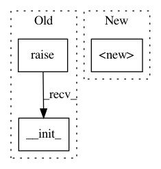

d6dcffa15112f03d1bb08764740a78728e47e7d7,texar/models/tsf/ops.py,GreedyPointerDecoder,__init__,#GreedyPointerDecoder#Any#Any#Any#Any#Any#Any#Any#,190
Before Change
class GreedyPointerDecoder(PointerDecoder):
def __init__(self, proj_layer, attn_layer, pointer_layer, enc_inputs,
enc_outputs, embedding, output_keep_prob=0.5):
super(PointerDecoder, self).__init_(proj_layer, attn_layer, pointer_layer,
enc_inputs, enc_outputs, embedding)
def next_inputs(self, t, p):
word = tf.argmax(p, axis=1)
next_inps = tf.nn.embeding_lookup(word, self._embedding)
return next_inps, word
After Change
class GreedyPointerDecoder(PointerDecoder):
def __init__(self, proj_layer, attn_layer, pointer_layer, enc_inputs,
enc_outputs, embedding, output_keep_prob=0.5):
super(GreedyPointerDecoder, self).__init__(
proj_layer, attn_layer, pointer_layer, enc_inputs,
enc_outputs, embedding)
def next_inputs(self, t, p):
word = tf.argmax(p, axis=1)
next_inps = tf.nn.embedding_lookup(self._embedding, word)
return next_inps, word
In pattern: SUPERPATTERN
Frequency: 3
Non-data size: 3
Instances
Project Name: asyml/texar
Commit Name: d6dcffa15112f03d1bb08764740a78728e47e7d7
Time: 2017-12-29
Author: zichaoy@cs.cmu.edu
File Name: texar/models/tsf/ops.py
Class Name: GreedyPointerDecoder
Method Name: __init__
Project Name: asyml/texar
Commit Name: d6dcffa15112f03d1bb08764740a78728e47e7d7
Time: 2017-12-29
Author: zichaoy@cs.cmu.edu
File Name: texar/models/tsf/ops.py
Class Name: TrainPointerDecoder
Method Name: __init__
Project Name: asyml/texar
Commit Name: d6dcffa15112f03d1bb08764740a78728e47e7d7
Time: 2017-12-29
Author: zichaoy@cs.cmu.edu
File Name: texar/models/tsf/ops.py
Class Name: GumbelSoftmaxPointerDecoder
Method Name: __init__